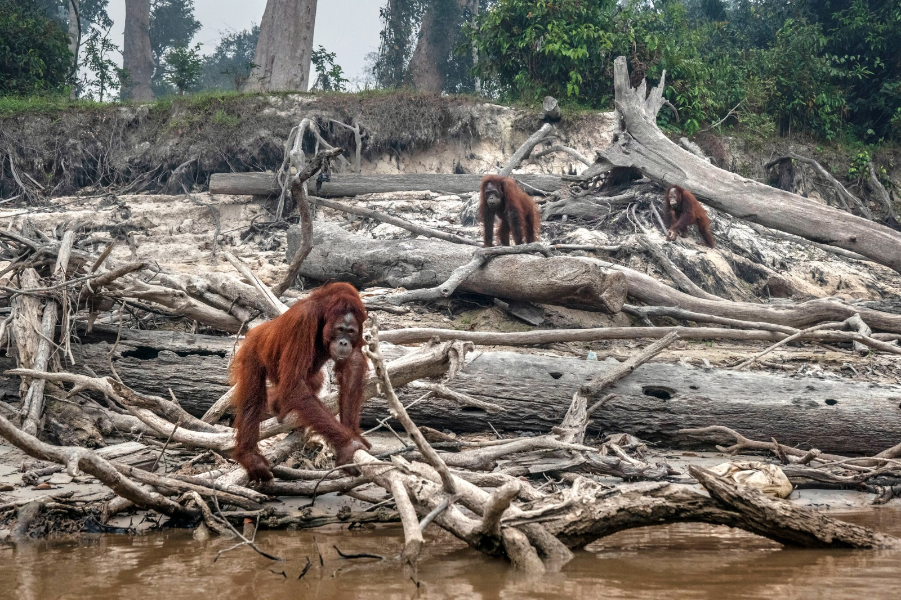

Effects of Climate Change:
1)Rising tempratures:
Increased frequency and severity of heatwaves.
Adverse impacts on human health, particularly among vunlerable populations.

2)Extreme weather events:
More frequent and intense occurences of hurricanes, droughts, floods, and wildfires.
Extensive damage to infrastructure, loss of life,and displacement of communities.

3)Melting ice and rising sea levels:
Disappearing glaciers and polar ice caps.
Rising sea levels leading to inundation of coastal areas,erosion,and increased salinity in freshwaater sources.

4)Ocean acidification:
Increased carbon dioxide absorption leading to acidic oceans.
Adverse impacts on marine life,especially those with calcium carbonate shells.

5)Biodiversity loss:
Disruption of ecosystems and threats to various species.
Cascading effects on the food and chain ecosystem services.
6)Agricultural impacts:
Changes in temprature and precipitation affecting crop yields.
Challenges for food security and increased food prices.

7)Health impacts:
Exacebration of the spread of certain diseases.
Compromised air quality,malnutrition,and waterbone illnesses.

8)Economic consequences:
Damage to infrastructure and decreased agricultural productivity.

Increased healthcare costs and population displacement leading to economic instability and social disruption.